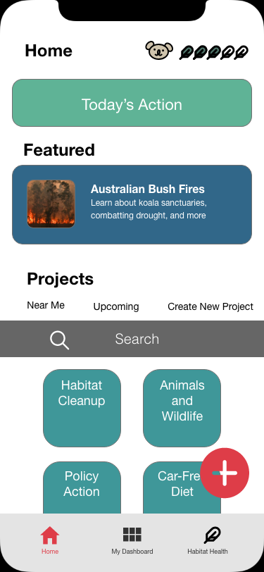
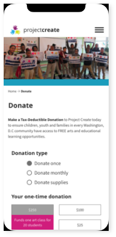
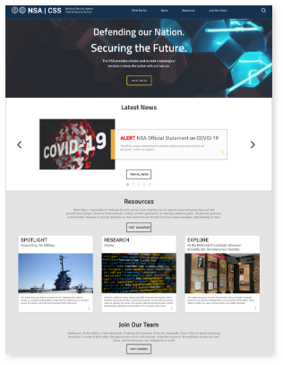
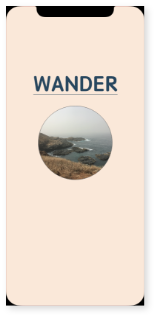
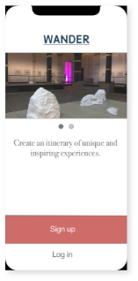
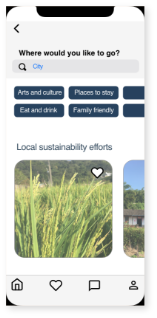

![[Footprints image1]](images/Footprints_Splash page.png)

Footprints uses custom avatars to make volunteering for green causes social and fun.
MOBILE APP FOR GREEN VOLUNTEERING
![[ProjectCreate image1]](images/Project Create mobile home.png)

A redesign of a DC-based arts organization streamlines the donation process for users, and makes content branding more consistent with the non-profit’s mission.
NON-PROFIT MOBILE AND DESKTOP WEBSITE REDESIGN

Optimizing the user interface for the NSA website to make it easier for users to find the information they need.
GOVERNMENT WEBSITE REDESIGN



A mobile app that lets users source local insights on forums and generate custom itineraries tailored to their tastes and needs.
TRAVEL APP TO CREATE UNIQUE ITINERARIES